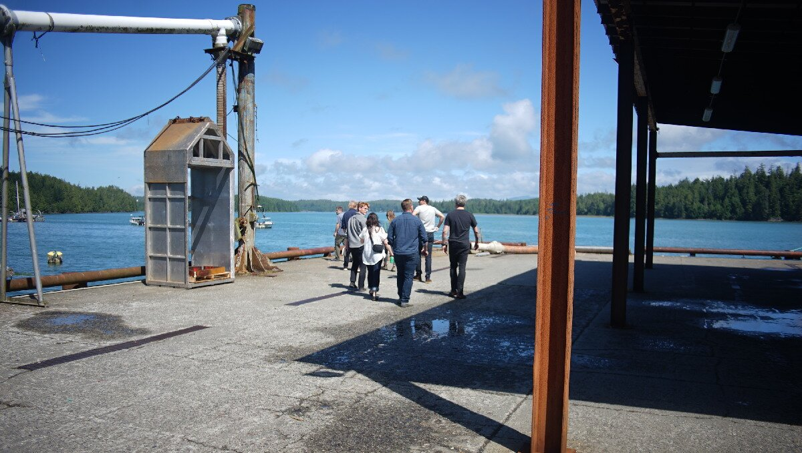

ucluelet
On July 8th we got up early, lifted anchor and weaved our way out of Bamfield through thick fog, carving a path through the Broken Islands to get to Ucluelet. In this area there are many dangers in the water, but all appeared to have been well-charted, and the visibility that day wasn't too low. We could see islands near us, their tops were truncated by fog.
Traffic consisted mainly of small runabouts, fishing or crabbing in the lee of the many islands populating this area. The morning was calm, but a light breeze added to our speed.
We made our way into Ucluelet around 1130, and onto the dock that a friend had reserved for us at the Canadian Princess Hotel. The way there was a bit scary because it was shallow and narrow, we had to go around the entire Ucluelet Small Craft Harbour to get to it. Our charts indicated that the water was 7 feet at zero tide. We arrived on a rising tide and had plenty of water under our keel. The dock is 240 ft long, and can only accommate a few big boats. Most of the boats occupying the dock were small runabouts for fishing. The hotel doesn't have a lot of facilities for boaters, but there is water on the dock(use your own hose and filter the water) and trash disposal. Moorage is 2.50$ per foot in the high season, power was only available in one spot.
We had come to Ucluelet to meet up with Avi who had just purchased the old seaplane base up inlet, with plans to turn it into a boatyard. Rising Tide Boat Works will offer regular boatyard services, but will also focus on electric motor conversions. Avi arrived later with Peter and Rob by car from Victoria. We attended a public hearing that day to attend Avi's presentation to the city about his upcoming plans. The presentation was very well received.
After that we had a drink at the impressive Black Rock Resort followed later by dinner at Pluvio, a very fancy restaurant where Avi treated us to a late evening multi-course vegan dinner. When we left the restaurant at 1130, staff warned us to be careful because a bear had been seen here just 20 minutes ago.
The next morning, we got up at 0600 to check how much water under our keel at the lowest tide of the day. We still had 3.3 ft under our keel at 1.76 ft of tide (might get a bit dicey at zero tide). After breakfast, we met up with Rob and went to visit the Ucluelet catch and release aquarium.
The aquarium features marine life found in Barkley and Clayoquot Sounds. The animals are caught by divers for the spring and summer season and released again in the fall. Salt water from the Pacific is cycled through the various tanks and kids are allowed to touch, albeit gently, some of the animals in the tanks, provided that they clean their hands prior to doing so.
After the aquarium we joined up with Peter and Avi again to meet up with the architects and other participants in the upcoming project. We saw plans for the buildings and later went to visit the property.
This is really an amazing place for a boatyard, we are very lucky to have witnessed the project in its early beginnings.